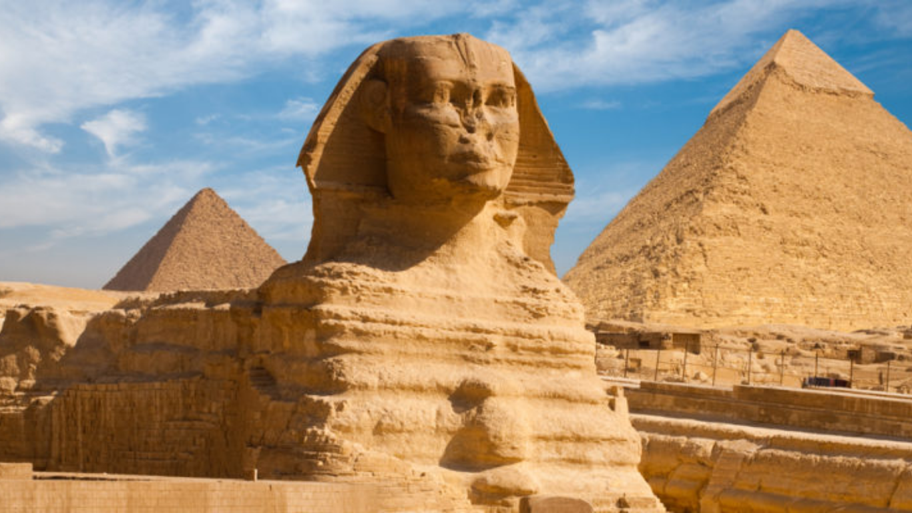
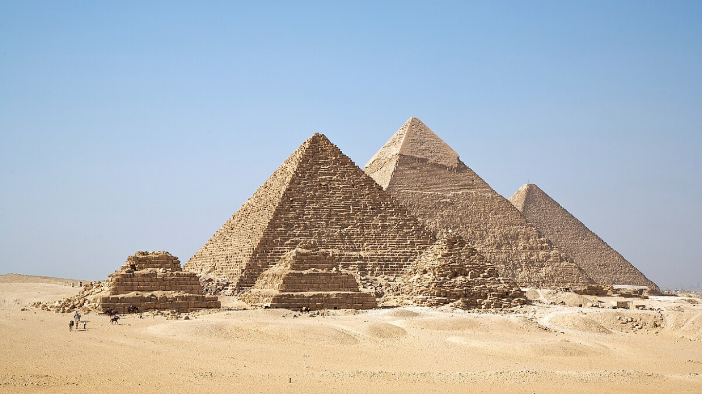
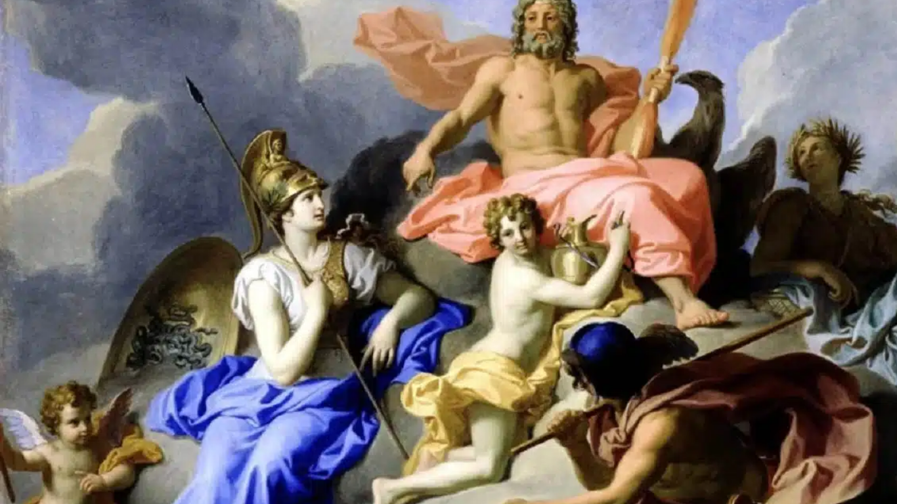
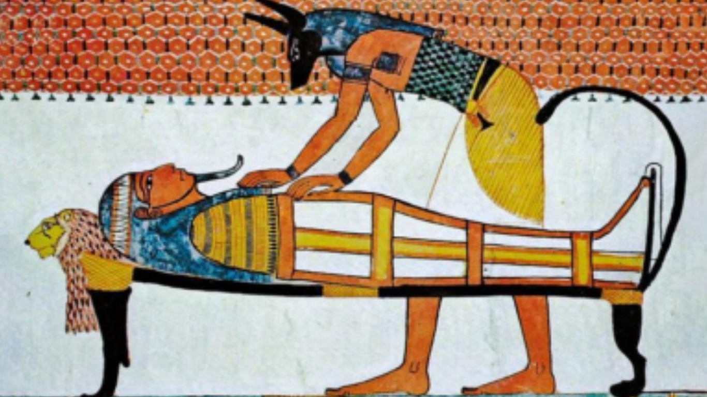
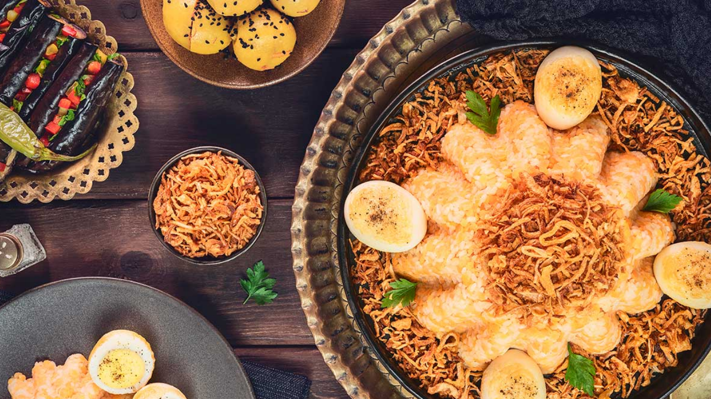
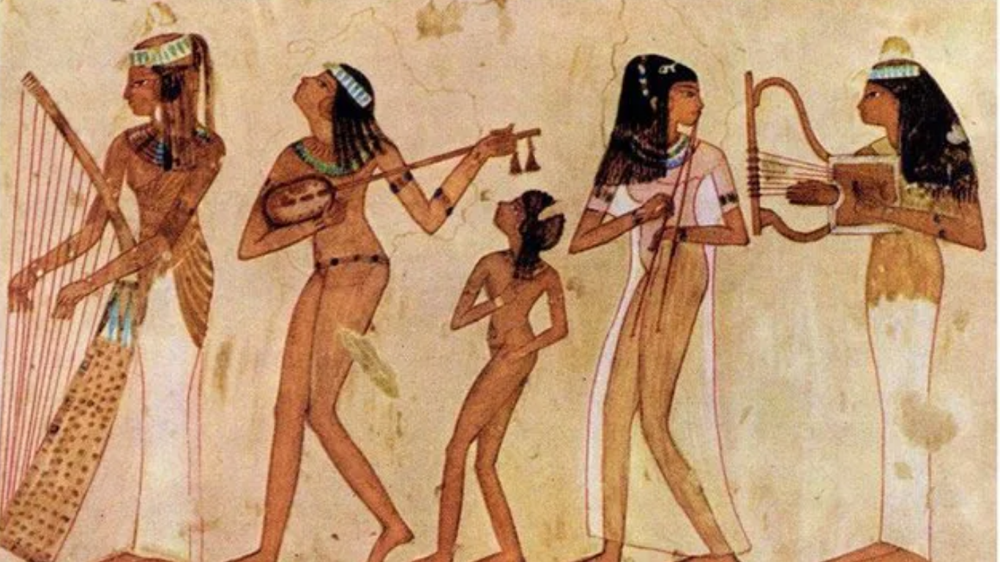

Conheça a cultura do Egito
A cultura do Egito é rica e diversificada, com destaque para a civilização do Egito Antigo e suas contribuições em ciência, matemática, escrita hieroglífica, arquitetura monumental (como as pirâmides) e arte.
Herança do Egito Antigo:

A civilização do Egito Antigo deixou um legado extraordinário que até hoje inspira o mundo:

Arquitetura monumental: pirâmides, templos, obeliscos e tumbas decoradas.

Religião politeísta:crença em diversos deuses como Rá, Ísis, Osíris, Anúbis e Hórus.

Mumificação:técnica para preservar corpos visando a vida após a morte.
Gastronomia Egípcia
A culinária egípcia é farta, aromática e cheia de temperos.
Alguns pratos típicos:
- Koshari: mistura de arroz, lentilhas, macarrão e molho de tomate.
- Full Medames: favas cozidas com azeite, alho e limão.
- Ta’ameya: versão egípcia do falafel
- Molokhia: sopa espessa feita com folhas verdes.
- Baklava e Basbousa: doces tradicionais.
Música e Dança
A música é parte fundamental da vida egípcia:
- Instrumentos tradicionais:oud, ney, tabla, qanun.
A famosa dança do ventre (Raqs Sharqi) nasceu na região e se tornou símbolo cultural mundial.